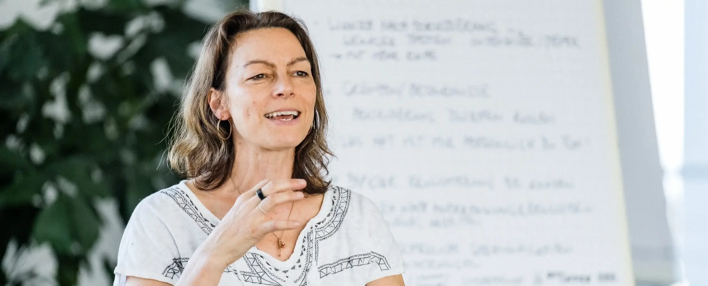

Teams und Führungskräfte
Veränderung in Organisationen beginnt bei den Menschen.
Haltung
Charlotte schafft Räume für ko-kreative Veränderung. Wer die eigenen Muster erkennt, gewinnt Klarheit, entwickelt Visionen und findet Lösungen, die tragen.
Sie verbindet Psychologie und Betriebswirtschaft mit Erfahrung in Change-Beratung und Personalentwicklung, in großen wie in kleinen und mittleren Unternehmen, im In- und Ausland und auf allen Hierarchieebenen.
Angebote
- Führungskräfte-EntwicklungEigene Muster erkennen, Haltung klären und Führung bewusst gestalten.
- TeamentwicklungZusammenarbeit sichtbar machen: Rollen, Beziehungen und ein gemeinsames Bild der Zukunft.
- OrganisationsentwicklungVeränderungsprozesse begleiten, die Menschen mitnehmen statt überfahren.
- KonfliktklärungSpannungen als Information lesen und gemeinsam klären.
- RetreatsMehrtägige Auszeiten für Führungskräfte und Teams, auch gemeinsam mit Freibaden Consulting.
Die genauen Bezeichnungen legt Charlotte fest.
Mit Generative Painting im Team
Gemeinsames Malen macht sichtbar, was im Gespräch oft ungesagt bleibt: Rollen, Spannungen, eine gemeinsame Richtung. Jede Person bringt eine eigene Handschrift ein, und im Bild des Teams wird erkennbar, wie sie zusammenwirken.


Freibaden Consulting
Charlotte ist Geschäftsführerin von Freibaden Consulting in Freiburg. Dort begleitet sie gemeinsam mit anderen Transformationen in Unternehmen: Prozessbegleitung, digitale Lösungen, Führungs-Curricula und mehrtägige Führungsretreats.
Zusammenarbeit anfragen
Format, Dauer und Umfang richten sich nach eurem Anliegen. Im Erstgespräch klärt ihr, was passt.